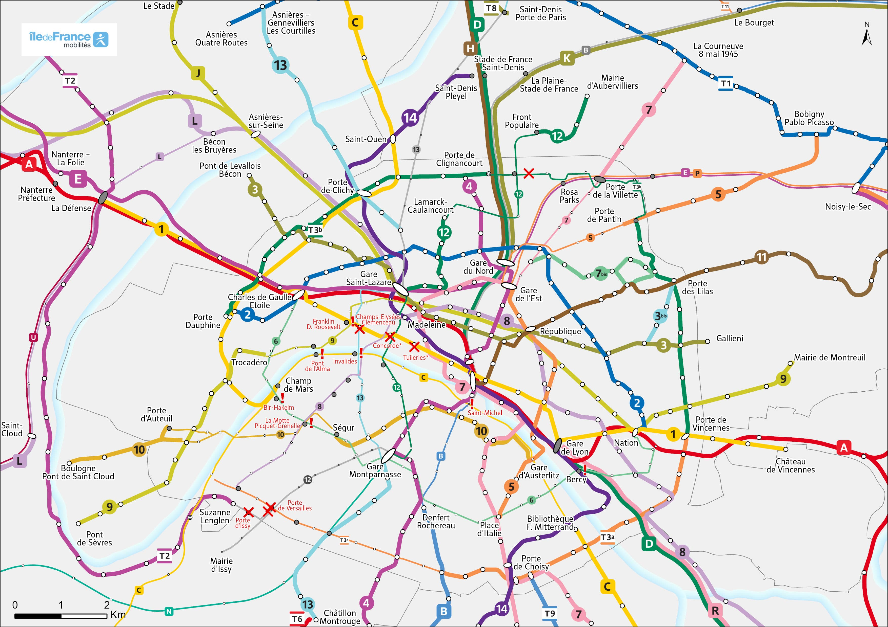
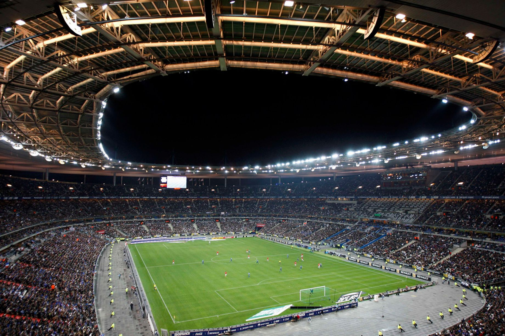
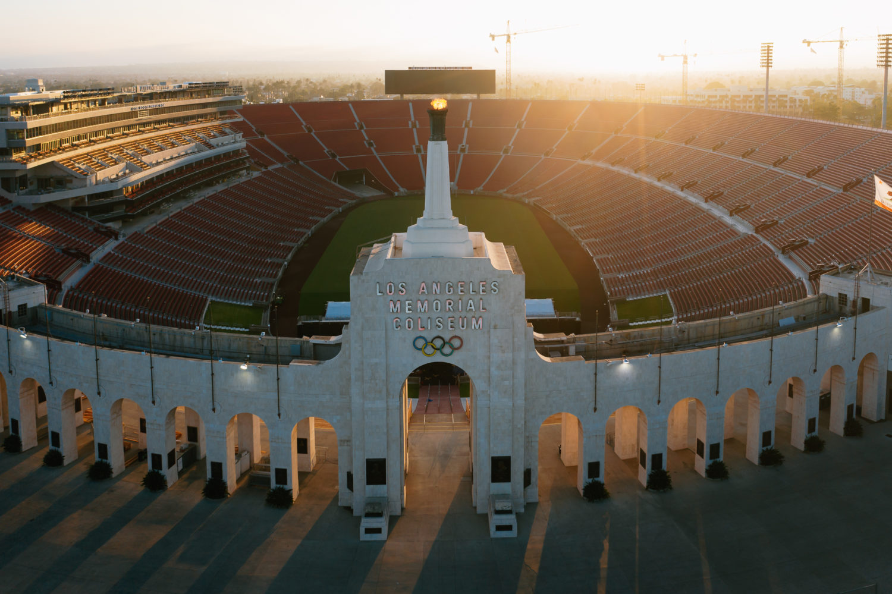

Infrastructures
L’Excellence de la Réutilisation des Lieux Iconiques : Une Fierté des JO 2024

Lors des Jeux Olympiques de 2024, la France a brillamment mis à l'honneur son patrimoine historique en réutilisant plusieurs lieux emblématiques. Parmi ces lieux prestigieux, le Château de Versailles s’est imposé comme une scène grandiose, où l'histoire et l’excellence sportive se sont harmonieusement rencontrées.
Le Château de Versailles : Symbole de Grandeur et d'Élégance

Reconnu mondialement pour son architecture majestueuse et ses jardins somptueux, le Château de
Versailles incarne la grandeur et l’élégance à la française. Ce site exceptionnel a été choisi pour accueillir les épreuves d'équitation, offrant ainsi un cadre grandiose et unique pour les spectateurs et les athlètes.
Plus de 20 000 personnes ont pu vivre ces moments inoubliables dans ce lieu chargé d’histoire, mêlant la beauté du sport a celle de l’art et de la nature.
Le parc du Château, d'une ampleur exceptionnelle, a parfaitement répondu aux exigences logistiques des Jeux. Son vaste espace a permis une organisation fluide des épreuves, tout en assurant une expérience immersive et inoubliable aux spectateurs.
Une Accessibilité Optimale : Un Atout Majeur

L'un des aspects les plus remarquables de l'organisation des épreuves au Château de Versailles fut la facilité d'accès offerte aux visiteurs. Grâce à une infrastructure de transport exceptionnelle, le site est facilement accessible depuis Paris et ses environs.
Pour améliorer encore davantage la fluidité des déplacements, des installations supplémentaires ont été mises en place, permettant aux spectateurs de rejoindre le site en toute simplicité. Le réseau de transport en commun a joué un rôle clé dans cette réussite, avec plusieurs options pratiques :
Métro :
• Ligne 9 jusqu'à Pont de Sèvres, puis Bus 171 jusqu'à Versailles
RER :
• Ligne C, reliant directement Paris au Château
Bus :
• Ligne 171 reliant les principaux points d’accès
Le Stade de France : Le Temple du Sport Nationale Français et Une Cérémonie de Clôture Inoubliable
Le Grand Stade de France, lieu légendaire ayant accueilli des événements sportifs majeurs comme la Coupe du Monde de Football 1998, s’est une nouvelle fois imposé comme un élément central des Jeux Olympiques de 2024. Connu pour avoir accueilli de grandes rencontres en athlétisme ainsi qu’en rugby, ce monument moderne du sport a également été choisi pour accueillir la cérémonie de clôture, marquant ainsi de façon magistrale la fin de cet événement planétaire.
Une Histoire Glorieuse : Un Édifice des Évènements Sportifs
Depuis son inauguration, le Grand Stade de France a été le théâtre de moments inoubliables. Il est non seulement un lieu de compétition, mais aussi un symbole de l’excellence sportive française et internationale. Lors des Jeux Olympiques 2024, il a de nouveau montré pourquoi il était considéré comme l’un des stades les plus prestigieux du monde.
Avec une capacité impressionnante de plus de 80 000 places, le Grand Stade de France a offert aux spectateurs une vue imprenable sur les compétitions olympiques, créant une ambiance électrisante et inégalée. Que ce soit pour l’athlétisme, le rugby ou d’autres sports, ce lieu a été le point de convergence pour les passionnés venus du monde entier, partageant ensemble des moments d'adrénaline et de joie.
Accessibilité Optimale : Un Réseau de Transport Varié
Un autre point fort du Grand Stade de France est son accessibilité exceptionnelle. Bien desservi par un réseau de transport dense et varié, il a permis a des milliers de spectateurs d'y accéder rapidement et facilement. Les infrastructures mises en place ont assuré une gestion fluide du flux de visiteurs, renforçant ainsi l’expérience globale.
Voici les différentes options de transport vers le Stade :
Tramway :
• T1, arrêt Hôpital Delafontaine, puis courte marche en direction du stade
• T8, arrêt Saint-Denis - Porte de Paris, suivi d’une marche en direction du stade
Métro :
• Ligne 13, descente à la station Saint-Denis - Porte de Paris
RER :
• B, arrêt La Plaine - Stade de France
• D, arrêt Stade de France - Saint-Denis
Bus qui desservent les abords du Stade :
• 139
• 153
• 170
• 239
• 353
• 255
La Tour Eiffel : Symbole Mondial et Épicentre du Beach-Volley Olympique

Lors des Jeux Olympiques de 2024, la Tour Eiffel, symbole incontesté de la France et de son rayonnement international, a une nouvelle fois été le centre d'un événement d'envergure mondiale. Au pied de ce monument emblématique, un stade provisoire a été spécialement aménage pour accueillir les épreuves de beach-volley, créant ainsi une rencontre unique entre sport et patrimoine.
Un Lieu Mythique Transformé en Stade Olympique
La Tour Eiffel, véritable icône parisienne, a offert un cadre absolument unique pour les compétitions de beach-volley. Le stade temporaire, soigneusement conçu pour l’occasion, a permis de conjuguer l’intensité sportive avec la beauté historique de ce lieu d’exception. Accueillant près de 13 000 spectateurs, ce stade a su recréer une atmosphère a la fois conviviale et intense, ou chaque match prenait des allures de spectacle, sublime par la silhouette de la Tour en arrière-plan.
Imaginez assister a un match de beach-volley avec, en toile de fond, la majestueuse Tour Eiffel scintillant sous le ciel parisien. C'est l’un des moments les plus marquants des JO2024, et une expérience unique pour les spectateurs venus des quatre coins du globe. Ce lieu, habituellement synonyme de romantisme et de contemplation, s'est transforme en une arène sportive captivante.
Une Accessibilité Exceptionnelle au Cœur de Paris
En plus de son aura iconique, la Tour Eiffel est idéalement située et parfaitement accessible pour les visiteurs grâce a de nombreux moyens de transport. Les organisateurs des JO2024 ont su tirer parti de cette situation géographique stratégique pour accueillir des milliers de visiteurs chaque jour.
Voici les principaux moyens d’accès a ce site exceptionnel :
Tramway :
• T2, arrêt Issy-Val de Seine, puis correspondance avec le RER C à destination de Champ de Mars - Tour Eiffel
Métro :
• Ligne 9, arrêt Trocadéro, suivie d’une agréable promenade avec vue directe sur la Tour
• Ligne 6, arrêts Bir-Hakeim ou Trocadéro, offrant une superbe vue panoramique sur la Tour Eiffel en chemin
RER :
• C, arrêt Champ de Mars - Tour Eiffel, avec un accès direct et des vues imprenables sur Paris depuis les alentours
Bus à proximité du lieu de compétition :
• 82
• 42
• 30
• 69
• 86
Ces trois lieux emblématiques de la France ont su accueillir une immense affluence de spectateurs grâce à leur accessibilité optimale. Chaque site, bien desservi par une multitude de transports que ce soit par tram, métro, RER ou bus a permis à des milliers de visiteurs de rejoindre facilement les événements, renforçant ainsi l’expérience olympique en fluidifiant les de placements et en garantissant un accès rapide et pratique à ces sites exceptionnels.
L’efficacité de ces réseaux de transport a joué un rôle clé dans le succès des Jeux Olympiques 2024, permettant aux spectateurs du monde entier de profiter pleinement des compétitions et des spectacles dans des cadres aussi prestigieux que le Château de Versailles, le Grand Stade de France, et la Tour Eiffel.
Infrastructures Sportives pour les Jeux Olympiques 2028
Les Jeux Olympiques 2028 de Los Angeles s’annoncent comme un évènement mémorable, avec l’utilisation d’infrastructures de classe mondiale, prêtes a accueillir des milliers de spectateurs et d’athlètes venus des quatre coins du globe. Ces installations allient modernité, capacité d’accueil et accessibilité, offrant ainsi des conditions optimales pour le bon de roulement des compétitions.
SoFi Stadium : Un bijou Technologique pour le Football et le Rugby

Le SoFi Stadium, un stade ultramoderne situé à Inglewood, pourrait devenir l’un des points forts des Jeux Olympiques 2028, accueillant les compétitions de football et de rugby. Avec une capacité de 70 000 places, ce stade est équipe des technologies les plus avancées pour offrir une expérience immersive tant
pour les spectateurs que pour les athlètes. Son architecture futuriste et ses écrans géants à 360° permettent a tous les visiteurs de vivre une expérience unique, peu importe ou ils se trouvent dans le
stade.
Voici son accessibilité :
Métro :
• Ligne K (Crenshaw/LAX) jusqu’à l’arrêt Downtown Inglewood, puis une courte navette ou marche vers le stade
Bus desservants le SoFi Stadium et qui connectent aux autres réseaux de transport de la ville :
• 115
• 211
• Des services de navettes olympiques seront mis en place pour réduire la congestion et faciliter l’accès au stade les jours d’événements majeurs
Los Angeles Memorial Coliseum : Un Site Historique Rénove pour l’Athlètisme et les Cérémonies

Le Los Angeles Memorial Coliseum, véritable monument historique ayant accueilli les JO de 1932 et de 1984, serait de nouveau un atout majeur lors des JO2028. Ce stade serait pressenti pour accueillir les cérémonies d'ouverture et de clôture ainsi que les épreuves d'athlétisme, combinant l’héritage historique du lieu à l'aide installations modernisées. Les rénovations récentes ont permis d’améliorer le confort des spectateurs et d’ajouter des équipements de haute technologie, tout en préservant le prestige et l’importance symbolique de cet édifice.
Voici son accessibilité :
Métro :
• Ligne E (Expo) avec un arrêt à Expo Park/USC, situé à quelques minutes à pied du Coliseum
Bus desservants directement les abords du stade :
• 38
• 81
• Des navettes devraient être mis en place mises en place les jours de grande affluence pour faciliter les déplacements des spectateurs venant de divers points de la ville.
Crypto.com Arena : Le Cœur de Los Angeles pour le Basketball et les Evènements Olympiques

Situé en plein centre-ville de Los Angeles, la Crypto.com Arena est une infrastructure de référence pour les événements sportifs de haut niveau, notamment le basketball. Il serait l’un des lieux phares des JO2028, offrant une expérience urbaine unique avec sa capacité d'accueil de plus de 20 000 spectateurs.
Grâce à sa position centrale, la Crypto.com Arena est idéalement situé pour permettre aux visiteurs d’accéder aux compétitions tout en profitant de l’ambiance dynamique du centre de Los Angeles.
Cependant, comme toute zone urbaine dense, le centre-ville peut parfois être sujet à des congestions routières, en particulier lors d'évènements majeurs. Des solutions alternatives de transport seraient fortement encouragées pour atténuer cet impact.
Voici son accessibilité :
Métro jusqu'à l’arrêt Pico Station, à quelques minutes à pied de la Crypto.com Arena :
• Ligne A (Blue)
• Ligne E (Expo)
Bus :
• 460
• 28
• Des navettes olympiques seront disponibles pour faciliter l'accès les jours de
compétition et éviter les embouteillages habituels